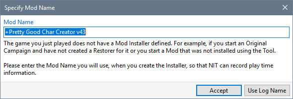
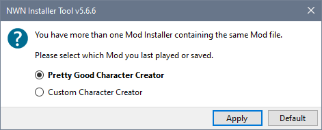
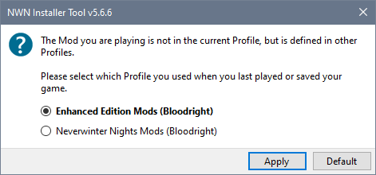

The Installer Tool tries to match NWN's Game Save or logged Module file name to the Mod name defined in your Mod list so it can keep track of the amount of time you spent playing specific Mods. Occasionally, the Tool is unable to determine which Mod you are playing and asks you to specify the Mod name associated with a Game Save or logged Module name.
Your responses are saved so that requests to specify or select Mod names are not repeated.

This situation usually occurs when you run the Installer Tool for the first time and have not yet defined any Mods.

This message is displayed when you start a new Game for a Mod that does not have a Mod Installer. For example, if you start an Original Campaign and have not created a Restorer for it (see Create Original Restorers) or you start a Mod that was not installed using the Tool.

If you have more than one Mod Installer containing the same Mod file, you are asked which NIT Mod Name you want to associate with the Game Save.

If the Mod you are playing is not in the current Profile, but is defined in other Profiles, you asked to select which one you used when you created the Game Save.
Automatic backup of Game Saves
Display Character Summary Information
Open a game save folder with Windows File Explorer
Restore Game Saves from Backup
Reduce the number of NWN Game Saves
Restoring deleted saves from the Recycle Bin
Link Game Save to Mod name